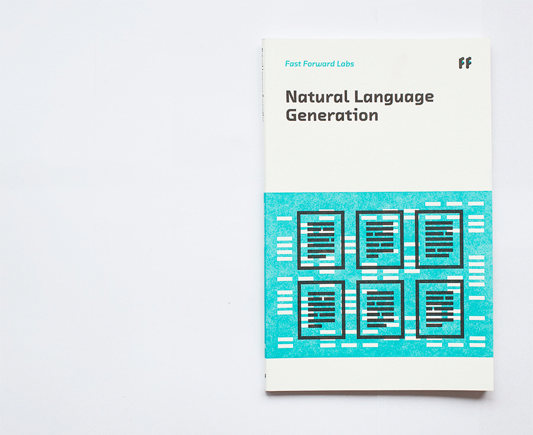
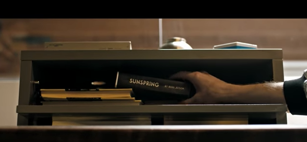

class: full-bleed, center, middle <img src="img/automat.png" width="100%"> ??? Welcome! I am Friederike Schüür and I work for Fast Forward Labs, an applied machine learning research and advising company. Hit: Use the arrow keys to move forward and backward. Hit `p` on your keyboard to toggle the presenter notes on/off. --- class: full-bleed, center, middle <img src="img/advising.png" width="75%"> ### Applied Machine Learning Research & Advising ??? At Fast Forward Labs, we do technical deep dives into emerging technologies that we believe will find wide spread adoption within industry within the next 6 months to 2 years, a time frame that while ambitious keeps us honest, firmly grounded in the real world, and focused on solutions to real-world problems. As I like to say, we like to think about scifi and keep it real. We write research reports and build fully functioning prototypes to showcase emerging capabilities enabled by new machine learning algorithms and data science techniques. In addition, we work with clients, from small startups to large enterprise, on how to best leverage the power of data science and machine learning within their organizations. Novel tools are useful only if put to good use. Check us out! --- class: full-bleed, center, middle  ??? One of the first capabilities we explored was natural language generation (or NLG). Here you can see our report on natural language generation. Our research reports provide an introduction to the topic, why it's worth your time and maybe (hopefully) your money, and they provide a how to guide for technical teams looking to build a solution to grow in-house capabilities. --- class: full-bleed, center, middle ??? NLG turns structured data into human readable text, computers are learning to speak our language. To showcase this capability, we build a prototype to auto-generate real estimate listing for NYC—Robo Realtor. --- class: full-bleed, center, middle <video width="100%" autoplay> <source src="img/roborealtor.mp4" type="video/mp4"> </video> ??? Let's say I am a real estate agent and I just got a new listing: a 5 bed, 2 bath in midtown. It comes with a doorman and a dog, if you happen to have one. Robo-realtor takes structured input and auto-generates real estate listings that not only match the input but also the language typically used by real estate agents in that area of Manhattan. As a real estate agent, instead of writing one from scratch, I can pick a high scoring listing I like, modify it if necessary, and done. Easier and faster than writing one from scratch. Associated Press now uses robot journalists to report on minor league baseball games, robot journalists write weather reports, and NLG is used to generate tailored reports that explain the performance of individual stock portfolios. Will an AI soon win the Pulitzer Price? --- class: full-bleed, center, middle  ??? A group of artists and machine learning researchers trained a recurrent neural networks on movie scripts to teach the network to write its own movie script. The result, Sunspring, is mesmerizing, showcases the promise of recurrent neural networks for free-form text generation, and most of all ... --- class: full-bleed, center, middle <img src="img/sunspring.gif" width="100%"> ??? ... the power of the human mind to make sense of nearly everything. When asked ... --- class: middle <b>What is the future of machine written entertainment?</b> It's a bit sudden. I was thinking of the spirit of the men who found me and the children who were all manipulated and full of children. I was worried about my command. I was the scientist of the Holy Ghost. ??? --- class: center, middle ??? ... quality control is key when building consumer facing solutions, a key challenge when putting state-of-the-art applied machine learning to work. --- class: center, middle <img src="img/ff04-01.jpg" height="100%"> ??? For one of our next report we used that same technique, recurrent neural networks, and looked at the reverse problem: given a long newspapter article, or collection of text documents, how can I quickly, easily, and reliably extract the gist of the article without actually reading it—a solution for busy people in this information rich world. We built a prototype called Brief that auto-summarizes articles for you. --- class: full-bleed, center, middle <video width="100%" controls> <source src="img/ff04.mov" type="video/mp4"> </video> ??? [describe what is happening on the screen] Brief, an example of extractive summarization as opposed to extractive summarization, showcases the ability to read at scale. To allow discretionary traders skim all the news in the world, for example, as they ponder what trades to place. --- class: full-bleed, center, middle <img src="img/ff05.gif" height="100%"> ??? Our most recent report was on probabilistic programming, a set of techniques to make Bayesian inference more accessible. --- class: full-bleed, center, middle <video width="100%" controls> <source src="img/pre.mov" type="video/mp4"> </video> ??? [describe] --- class: full-bleed, center, middle <img src="img/advising.png" width="75%"> ### Applied Machine Learning Research & Advising --- class: full-bleed, center, middle <img src="img/yarn.png" height="100%"> ??? --- class: middle, center <img src="img/advising.png" height="100%"> ### Thank you! Slides • [fastforwardlabs.com/talks/machines-media](http://fastforwardlabs.com/talks/machines-media) @fastforwardlabs • fastforwardlabs.com